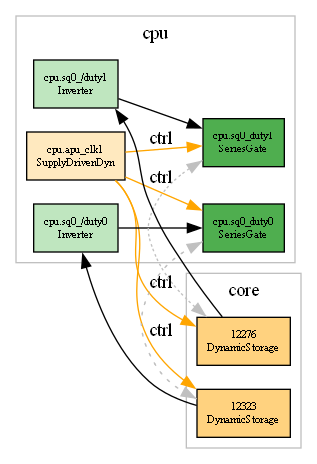

The one number that decides everything決定一切的那一個數字
Every abstraction idea — IR, codegen, gate-folding, latch-collapse, bus-merge — is a bet that the engine is doing redundant work that a smarter representation can skip. So before anything else, we measured how much work a single state change actually triggers. The S1 engine resolves a change by walking, through currently-conducting transistors, the group of nodes that share a voltage. We instrumented that walk and ran a full frame:
每一個抽象化想法 —— IR、codegen、閘折疊、閂鎖塌縮、匯流排合併 —— 都是在賭引擎做了多餘的工,而更聰明的表示法能跳過。所以在做任何事之前,我們先量「一次狀態改變到底觸發多少工」。S1 引擎解析一次改變的方式,是沿著當下導通的電晶體,走訪共享同一電壓的那一群節點。我們替這個走訪加了計數器,跑了一整張 frame:
The average conducting group is 1.13 nodes. That is the whole story. The engine already operates at the netlist's natural minimum granularity — when a node flips, it almost never drags anyone else along. There is no fat 1,000-node cascade hiding in there to compress. A pure-logic node is resolved in O(1) by a fast-path that reads a handful of bytes and a lookup-table; ~70% of all re-evaluations are exactly this. An abstraction can only ever remove work that exists. The measured work per change is already ~one node — there is almost nothing to remove.
平均導通群是 1.13 個節點。這就是全部的故事。引擎早已運作在網表的天然最小顆粒度 —— 一個節點翻動時,幾乎不會把別人一起拖下水。裡面沒有藏著什麼肥大的千節點串連等著被壓縮。一個純邏輯節點由 fast-path 以 O(1) 解掉(讀幾個 byte + 一張查表);所有重算裡約 70% 正是這種。抽象化只能拿掉「存在的工」。而每次改變實測的工已經是「約一個節點」—— 幾乎沒有東西可拿。
Why IR / gate-abstraction can't beat S1 — the mechanism為何 IR / 閘抽象贏不過 S1 —— 機制
There are only two ways an abstraction could be faster, and the 1.13 number kills both:
抽象化只有兩種可能變快的途徑,而 1.13 這個數字把兩條都掐死:
(a) Cheaper per-node evaluation — swallowed by memory latency(a) 每節點評估更便宜 —— 被記憶體延遲吞掉
An S1 pure-logic eval is "read the pull-down gate states, OR them, index a 256-entry LUT." An IR/gate eval replaces the LUT read with a bitwise ~(A|B). In a memory-bound, branch-unpredictable event loop the ALU difference is nothing — the cost is the cache-latency of fetching the inputs, which both pay identically. We measured the floor: ~84 million node re-evaluations per 200k half-cycles = ~420 events per half-cycle, ~20 ns each. At ~1-2 ns L1 latency plus dependent pointer-chasing, ~20 ns is the CPU's speed-of-light for "resolve one node and propagate it." A cheaper boolean doesn't move it.
S1 的純邏輯評估是「讀下拉閘的狀態、OR 起來、查 256 格 LUT」。IR/閘評估把 LUT 讀換成位元運算 ~(A|B)。在 memory-bound、分支難預測的事件迴圈裡,這點 ALU 差異等於零 —— 成本是抓取輸入的 cache 延遲,兩者付得一模一樣。我們量了地板:每 20 萬半週期約 8400 萬次節點重算 = 每半週期約 420 個事件,每個約 20 奈秒。在約 1-2 奈秒的 L1 延遲加上相依指標追逐之下,約 20 奈秒就是「解一個節點並傳播出去」的 CPU 光速。換成更便宜的布林式動不了它。
(b) Fewer nodes — but the foldable ones are already free(b) 更少節點 —— 但能折的早就免費了
The logic-gate fold removes internal/intermediate wires. We measured the realistic foldable set at ~14.5% of nodes. But those nodes are overwhelmingly the pull-up gate outputs the fast-path already resolves in O(1); folding them into a consumer saves the consumer nothing it wasn't already going to do. The honest expected speedup from the full fold is ~2-4%, at real behavioral risk (timing/glitch in a hand-built series-parallel reduction). "15%" is a node-count figure, not a speed figure.
邏輯閘折疊拿掉內部/中介線。我們量出務實可折的集合約佔節點 ~14.5%。但這些節點絕大多數正是 fast-path 本來就以 O(1) 解掉的上拉閘輸出;把它們折進消費端,並不能讓消費端少做它本來就要做的事。完整折疊老實的預期加速是 ~2-4%,還帶著真實的行為風險(手工 series-parallel 化約的時序/毛刺)。「15%」是節點數的數字,不是速度的數字。
And the AOT route is worse, not better. The project already tried compiling the logic to straight-line code (an IR interpreter, then a codegen back-end, then the "Escape-1" oblivious compile). Every one was slower on one core: IR interpreter −2.5%; AOT/codegen 3-6× slower; oblivious-compiled 84× slower. The reason is the mirror image of the 1.13 number: a compiled block evaluates the whole region every step (~14,700 nodes) to find the ~420 that changed — it trades sparsity for straight-line speed and loses by ~35×. Full IR/codegen data →
而 AOT 路線是更糟,不是更好。專案早就試過把邏輯編成直線碼(IR 直譯器、再來 codegen 後端、再來「Escape-1」oblivious 編譯)。每一個在單核上都更慢:IR 直譯 −2.5%;AOT/codegen 慢 3-6×;oblivious 編譯 慢 84×。原因正是 1.13 這個數字的鏡像:一個編譯區塊每一步都評估整個區域(約 14,700 節點)才能找出那變動的約 420 個 —— 它拿稀疏性去換直線速度,結果輸了約 35×。完整 IR/codegen 數據 →
The estimators we built — and the predictions they refuted我們建的估算器 —— 以及它們打臉的預測
We asked Gemini (a strong model, given the full measured context) where the bigger reductions live beyond the ~15% logic fold. It named four levers and gave confident ceilings. We then built the cheapest measurement for each — and ran them. Here is the prediction next to the fact.
我們問 Gemini(一個強力模型,並附上完整的實測脈絡):除了那 ~15% 邏輯折疊之外,更大的縮減在哪。它點名四根槓桿、給了自信的上限。我們替每一根做了最便宜的量測 —— 並跑了。以下是「預測」對「事實」。
| Lever (AI's idea)槓桿(AI 的點子) | AI predictionAI 預測 | Measured實測 | Verdict判決 |
|---|---|---|---|
| 1. Memory / latch collapse "the big lever — collapse OAM/RAM/registers"「最大的槓桿 —— 塌縮 OAM/RAM/暫存器」 |
~30-40% of nodes的節點 | 17.3% (clean held bits only 13.0%)(乾淨的保存位元只有 13.0%) |
✗ ~half約一半 |
| 2. Bus / decoder abstraction "kills a giant 1,000-node BFS"「殺掉一個千節點的大 BFS」 |
~7% nodes + huge BFS-time win節點 + 巨大的 BFS 時間勝利 | 3.8% nodes;節點; no giant BFS exists根本沒有大 BFS |
✗✗ premise false前提錯誤 |
| 3. Clock-phase event gating "highly lucrative — skip glitches"「非常有賺頭 —— 跳過毛刺」 |
~20-35% fewer events更少事件 | 0.3% of pops的彈出 | ✗✗✗ ~100× off差約 100 倍 |
| 4. Deeper logic folding "fanout-2, adder/XOR cells"「fanout-2、加法器/XOR cell」 |
2-4% extra額外 | matches — but adds risk for noise吻合 —— 但為噪音等級的量加風險 | ≈ "dead end" (its own words)「死路」(它自己說的) |
The sharpest refutation: there is no giant BFS最尖銳的打臉:根本沒有大 BFS
Lever 2's entire rationale was "one toggle in the 1,076-node channel component fires a BFS touching ~1,000 nodes — abstract it away to kill that." We found the 1,076-node component, then measured the actual walk: depth 1.13, max 14. The fast-path and the P-1 → P-4 prunes already keep every conducting group tiny. The 1,000-node BFS the prediction was built on does not happen. This is the cleanest case of a confident, mechanistically-plausible AI argument resting on a quantity nobody had measured — and being wrong by ~750×.
槓桿 2 的整套理由是「那個 1,076 節點的通道連通塊裡只要有一個翻動,就會觸發一個掃過約 1,000 個節點的 BFS —— 抽象掉它來消滅那個」。我們找到了那個 1,076 節點的連通塊,然後量了實際走訪:深度 1.13、最大 14。fast-path 與 P-1 → P-4 剪枝早就把每個導通群壓得很小。那個預測賴以成立的千節點 BFS 根本不會發生。這是最乾淨的一個例子:一個自信、機制上看似合理的 AI 論證,建立在一個沒人量過的量上 —— 然後錯了約 750 倍。
Why was the AI consistently optimistic? Because its priors are CMOS / generic-EDA: it expected series NAND stacks (NMOS has almost none — body-effect makes designers use parallel NOR), giant data-bus BFS cascades (the prunes already flattened them), and clock-phase glitch storms (the same prunes already drop them at enqueue). Every overshoot is a textbook structure that this already-optimized engine had quietly removed.
AI 為何一貫樂觀?因為它的先驗是 CMOS / 通用 EDA:它預期有串接 NAND 堆疊(NMOS 幾乎沒有 —— body effect 讓設計者改用並聯 NOR)、巨大的資料匯流排 BFS 串連(剪枝早把它們壓平了)、以及時脈相位的毛刺風暴(同一批剪枝早在入列時就丟掉了)。每一次高估,都是一個教科書結構,而這顆已被優化過的引擎早就悄悄把它移除了。
What the chip actually is: 95.4% digital, 4.2% analog這顆晶片到底是什麼:95.4% 數位、4.2% 類比
The same classification pass that fed the estimators also tagged every node with a gate-class and a digital-ness bucket. Purely from the netlist's structure (no simulation), the 14,727 live nodes split:
餵給估算器的同一個分類流程,也替每個節點標上閘類別與數位性歸類。純粹從網表結構(不靠模擬),14,727 個有效節點分成:
So digital (logic + registers) = 95.4%. This independently re-derives the Escape-1 headline — that ~98.9% of the chip's activity is reducible to logic + registers and only ~1.1% is genuinely analog — but this time from a purely structural pass, not a behavioral one. (Our 4.2% over-counts true analog: it lumps in routing fabric that is behaviorally digital, so the real analog core is even smaller, consistent with the 1.1%.) The conclusion is robust precisely because the digital share is so high: the chip is almost all logic. And it still can't be sped up — because being logic is not the bottleneck; the per-event memory latency is.
所以 數位(邏輯+暫存器)= 95.4%。這獨立地重新推導出 Escape-1 的標題結論 —— 晶片約 98.9% 的活動可化約成邏輯+暫存器、只有約 1.1% 是真類比 —— 但這次是從純結構的分析,而不是行為的。(我們的 4.2% 高估了真類比:它把行為上其實是數位的路由布線也算進去,所以真正的類比核心更小,與 1.1% 一致。)結論之所以穩固,正因為數位佔比如此之高:這顆晶片幾乎全是邏輯。然而它依然無法被加速 —— 因為「是邏輯」不是瓶頸;每事件的記憶體延遲才是。
The external model's final verdict外部模型的最終判決
We handed Gemini the full measured table above plus the project's catalogue of nine proven dead-ends, and asked it directly: is there any single-core, event-driven lever left above ~20%? Its answer opened: "You are done." It then did the arithmetic that makes the wall physical, not strategic:
我們把上面完整的實測表、加上專案九條已證實的死路清單交給 Gemini,直接問:還有任何單核、事件驅動、超過 ~20% 的槓桿嗎?它的回答開頭是:「你做完了。」接著它做了那個讓這道牆變成物理、而非策略問題的算術:
~420 events/half-cycle at ~20 ns each is the hardware floor. To hit NES real-time (42,954,552 hc/s) you would have to process those 420 events in 0.05 ns per half-cycle — a 4 GHz CPU completes 0.2 clock cycles in that time. "You have built the fastest software switch-level NMOS engine possible. The laws of physics on a Von Neumann architecture say you stop here."
每半週期約 420 個事件、每個約 20 奈秒,就是硬體地板。要達到 NES 實機(每秒 42,954,552 hc),你得在每半週期 0.05 奈秒內處理完那 420 個事件 —— 一顆 4 GHz CPU 在那段時間只能跑完 0.2 個時脈週期。「你已經做出最快的軟體開關級 NMOS 引擎。在 Von Neumann 架構上,物理定律說你到此為止。」
Notably, this is the same model that, one round earlier, predicted a "3-5× → ~300-500K hc/s" headroom from the four levers. The difference between the two answers was not a better model — it was data. Given the measurements, even the optimistic model converged on the negative result the project had already reached the hard way.
值得注意的是,這正是上一輪預測那四根槓桿能帶來「3-5× → ~30-50 萬 hc/s」餘裕的同一個模型。兩個答案的差別不是換了更好的模型 —— 是數據。在有了量測之後,連樂觀的模型都收斂到專案早已用最硬的方式抵達的那個負結論。
The catalogue of dead-ends (the wall, mapped)死路清單(已被測繪的牆)
None of this is one model's opinion. It is what the project measured, on real hardware, with bit-exact checksums where the idea was supposed to be exact:
這些都不是某個模型的意見。這是專案在真實硬體上量出來的,凡是「應該等價」的點子都帶 bit-exact checksum:
| Idea點子 | Result vs S1對 S1 結果 | Root cause根因 |
|---|---|---|
| AOT / codegen macro-blockAOT / codegen 巨集區塊 | 3-6× slower | dense re-eval destroys sparsity密集重算摧毀稀疏性 |
| Oblivious compiled (Escape-1)Oblivious 編譯(Escape-1) | 84× slower | i-cache, same causei-cache,同因 |
| IR interpreterIR 直譯器 | −2.5% | ALU win swallowed by latencyALU 勝利被延遲吞掉 |
| GPU, single instanceGPU,單一實例 | 10.7× slower | divergent branches, sync分支發散、同步 |
| Bit-parallel / bitset BFS位元平行 / bitset BFS | 156× slower | walks avg 1.4 nodes — overhead crushes them走訪平均 1.4 節點 —— 額外開銷壓垮它 |
| Per-chip / fine parallelism每晶片 / 細粒度平行 | 15× slower | per-wave work too small to amortize sync每波工太小,攤不掉同步 |
| Counter-maintained O(1) fast-path計數器維護的 O(1) fast-path | −6% | maintenance in hotter path > saving在更熱路徑的維護 > 省下的 |
| Dominant-driver bypass (P-5)主導驅動旁路(P-5) | −6.84% | +13.76% skip, but ~7% maintenance floor+13.76% 跳過,但 ~7% 維護地板 |
| Under-settle (cap the settle)欠收斂(限制 settle) | CPU crashesCPU 崩潰 | deepest 0.58% is the real critical path最深的 0.58% 就是真正的關鍵路徑 |
The structural reason behind all of it: ~94% of the netlist is one bidirectional strongly-connected component — there is no auto-derivable static schedule (DAG) to compile to; only the ~6% feed-forward fringe is statically orderable. The frontier proof →
這一切背後的結構原因:約 94% 的網表是一個雙向的強連通分量 —— 沒有可自動推導的靜態排程(DAG)可編譯;只有約 6% 的前饋邊緣能靜態排序。前緣的證明 →
What the abstraction is good for: the gate-level view這個抽象化真正的用處:閘級視圖
The abstraction failed as a speed lever — but it succeeded as a lens. The classifier turns the transistor hairball into a typed, named gate-level netlist that an emulator developer can actually read. We exported the whole 2A03+2C02:
這個抽象化作為速度槓桿失敗了 —— 但作為一面透鏡成功了。分類器把電晶體毛線球變成一份有類別、有名字的閘級網表,emulator 開發者真的看得懂。我們把整顆 2A03+2C02 匯出:
- Structural Verilog: 3,398 exact NOR/inverter boolean assigns (
assign Y = ~(a | b);), 4,908 series-gate (AOI) cells with fan-in listed, 1,910 dynamic latches with their write-control and data-source identified, 12,817 named wires. (Series/dynamic cells are annotated, never given a possibly-wrong closed-form — honesty over completeness.)結構化 Verilog:3,398 個精確的 NOR/反相器布林式(assign Y = ~(a | b);)、4,908 個列出扇入的串接閘(AOI)、1,910 個認出寫入控制與資料來源的動態閂鎖、12,817 條具名線。(串接/動態 cell 用標註,絕不給出可能錯的封閉式 —— 誠實優先於完整。) - Graphviz signal-flow graph: 30,700 edges, colored by gate class, clustered cpu / ppu.Graphviz 訊號流圖:30,700 條邊、依閘類別上色、依 cpu / ppu 分群。
- Register/latch boundaries: 1,028 multi-bit groups auto-recovered from names (
a0..a7 → a[7:0]) — real NES registers surface:ppu.vramaddr_v[14:0],ppu.tile_l[15:0],cpu.sq0_t[10:0](APU square timer),BA[15:0](address bus).暫存器/閂鎖邊界:從名稱自動還原 1,028 組多位元(a0..a7 → a[7:0])—— 真實 NES 暫存器浮現:ppu.vramaddr_v[14:0]、ppu.tile_l[15:0]、cpu.sq0_t[10:0](APU 方波計時器)、BA[15:0](位址匯流排)。

--gate-filter cpu.sq0_du) and rendered: the 2A03's APU square-0 duty-cycle logic. Light green = inverter, dark green = series gate, amber = APU clock / dynamic-storage bit; the orange ctrl edges are the clock gating the series gates. From a 14,727-node hairball to a readable schematic.用名稱切出一小塊(--gate-filter cpu.sq0_du)並渲染:2A03 的 APU 方波-0 duty 邏輯。淺綠=反相器、深綠=串接閘、琥珀=APU 時脈/動態儲存位元;橘色 ctrl 邊是時脈閘控那些串接閘。從 14,727 節點的毛線球,變成看得懂的電路圖。This is where the value landed: not a faster sim, but a verifiable, navigable map of the silicon — named registers to set watchpoints on, a Φ1/Φ2-aware structure for chasing the undocumented hardware glitches emulators argue about, and a standard-EDA export to trace logic paths. The speed question is closed; the chip is now legible.
價值落在這裡:不是更快的模擬,而是一張可驗證、可導覽的矽晶圖 —— 有名字的暫存器可下中斷點、有相位(Φ1/Φ2)意識的結構可追那些 emulator 爭論不休、沒文件的硬體 glitch、以及一份標準 EDA 匯出可追邏輯路徑。速度的問題關閉了;這顆晶片現在讀得懂了。
Conclusion結論
The second S2 attempt reached the same place as the first — abstraction does not beat S1 — but this time the floor is mapped exactly. Single-core, event-driven switch-level is exhausted at ~15-20%, because the engine already runs at the netlist's natural minimum granularity (group depth 1.13) and is bound by ~20 ns of memory latency per event, not by computation. Every "bigger lever" — memory collapse, bus abstraction, clock-phase gating, deeper folding — was predicted optimistically by a strong model and refuted by measurement, by factors of ~2× to ~100×. The AOT escape from event-driven is worse (3-84× slower), because it trades the sparsity that makes the engine fast. Real-time on this paradigm is not a missing trick; it is 0.05 ns of physics. The win that remains is the gate-level view — the chip, finally legible.
第二次 S2 嘗試抵達了與第一次相同的地方 —— 抽象化贏不過 S1 —— 但這次把地板精確測繪了出來。單核、事件驅動的開關級在 ~15-20% 見頂,因為引擎早已運作在網表的天然最小顆粒度(群深度 1.13),受限於每事件約 20 奈秒的記憶體延遲,而非計算。每一根「更大的槓桿」—— 記憶體塌縮、匯流排抽象、時脈相位閘控、更深的折疊 —— 都被一個強力模型樂觀預測、又被量測以約 2× 到約 100× 的倍率打臉。逃離事件驅動的 AOT 路線更糟(慢 3-84×),因為它換掉了讓引擎變快的稀疏性。這個範式上的實機速度不是缺一招;是 0.05 奈秒的物理。留下來的勝利是那個閘級視圖 —— 這顆晶片,終於讀得懂了。
Measurements: full_palette, 14,727 live nodes, ~26.7K transistors, AMD Ryzen 7 3700X, S1 ≈ 115K hc/s. Estimators + classifier + export run load-time / DEBUG-instrumented; the engine is bit-exact and untouched (whole-NES checksum 0x9B103E5E206E4C37 @200k). Tools: --gate-abs-estimate, --gate-classify, --gate-export in src/AprVisual.S2. 2026-06-10.
量測:full_palette、14,727 有效節點、約 26.7K 電晶體、AMD Ryzen 7 3700X、S1 ≈ 115K hc/s。估算器+分類器+匯出皆為載入期 / DEBUG 計數;引擎 bit-exact 且未更動(整機 checksum 0x9B103E5E206E4C37 @20 萬)。工具:src/AprVisual.S2 的 --gate-abs-estimate、--gate-classify、--gate-export。2026-06-10。